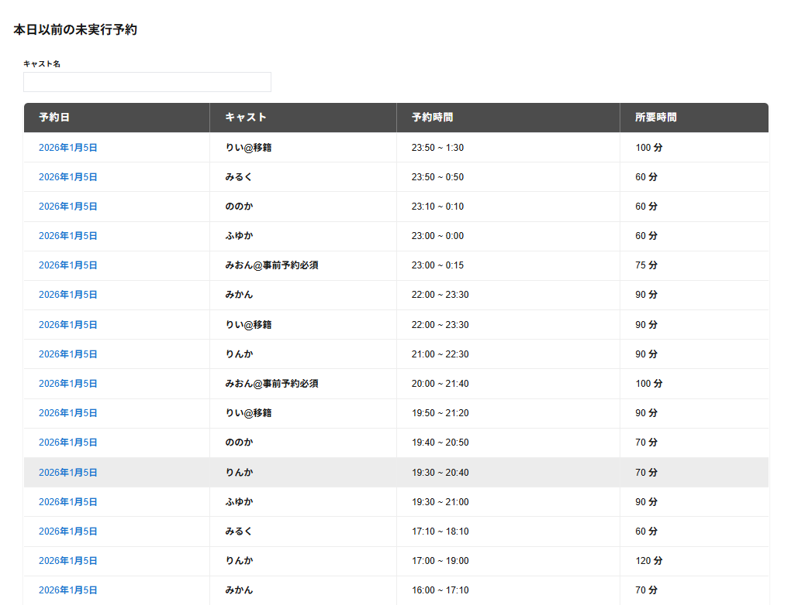

未完了スケジュールの本日以前の未実行の予約の以下の項目が一覧で表示されます。
・キャスト名検索
入力した文字が含まれるキャストが一覧で表示されます。
・予約日
未実行の予約の予定の年月日が表示されます。
・キャスト
対象の予約のキャスト名が表示されます。
・予約時間
未実行の予約の予定時間が表示されます。
・所要時間
未実行予約の所要時間が表示されます。
対象のキャストの列をクリックすると予約詳細の画面が表示されます。
※本日以前の未実行の予約がない場合は本日以前の未実行予約が表示されません。
